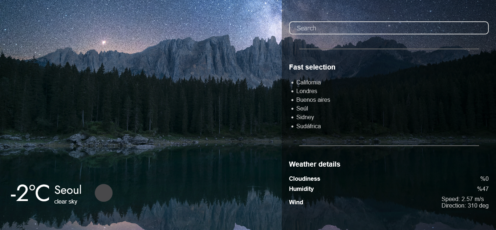

Wheater App
Description
SPA in which you can observe the climate of the cities of the world as well as some data. The application changes dynamically depending on the climate of the city you are looking for. To obtain the data, the openwheater API was used